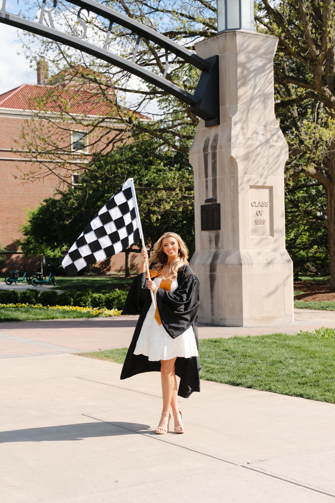
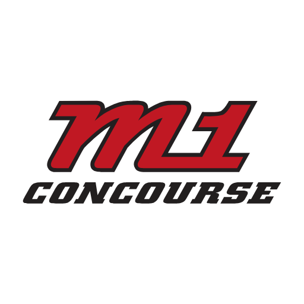

A practical starting point in motorsports
Tatum
Langston
NASCAR CUP SERIES PERFORMANCE ENGINEER
I'm a Purdue University graduate in Mechanical Engineering Technology and a NASCAR Cup Series Performance Engineer at Spire Motorsports, supporting all three cars before moving into a NASCAR Cup Series Race Engineer role in 2027.
My background includes R&D with Andretti Global’s IndyCar program, design engineering at Utilimaster, and student racing with Windsor Racing, Lady Elizabeth EV, and ShreveHart Racing.
My time in student racing led to some of my proudest achievements: becoming the first woman to win an EV Grand Prix, founding and leading the first all-women team to win a Purdue Grand Prix, and setting the Purdue Grand Prix women’s track record. Beyond the track, I competed in the first annual Women with Drive case competition.
Created for the American Speed Festival at M1 Concourse, this hub shares practical ways to get involved in racing, build skills, and explore motorsports careers.

There isn't one route into racing.
Student teams, local racing, manufacturing, data analysis, internships, and volunteering can all be useful places to start. Pick an opportunity you can take part in consistently, ask questions, and document what you learn.
M1 Concourse is a great place to connect with the motorsports community. Its automotive festivals, events, and driving experiences offer ways to meet fellow enthusiasts, see cars on track, and find inspiration for your own path into racing.

M1 Concourse